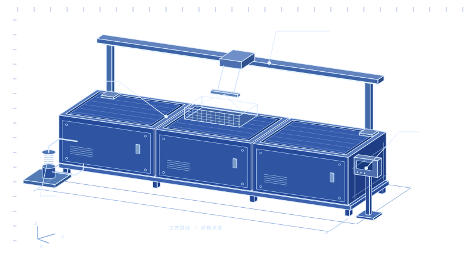

交互式设备图谱 / 图幅 A—01
查看设备部件
选择图上的编号，查看该部件的设计输入，再将需要讨论的部件加入关注清单。
装配示意 / A—01非比例绘制

01 工艺槽体02 料篮移载03 循环过滤04 操作通道
部件 / 01
槽体与料篮
工艺槽容纳槽液和装有工件的料篮。工件朝向及槽液能否充分到达目标表面，共同决定可用清洗空间。
待确认信息
- 最大满载料篮的尺寸及工件朝向
- 工件材料、表面状态与残留物
- 目标出料状态及检验方法
项目标注 / 已选部件
尚未选择关注部件
添加一个或多个部件，发起询盘时会一并带入。
评估问题： 哪些凹槽、盲孔或接触点最难清洗？ 项目资料